Beginning of the NPA Process
The NPA process is triggered by the sales person when they add a date to the "NPA needed by" field in Zoho. This will trigger an automated email to you with the following information: Client Name, Sales person name, NPA need by date, and Zoho Opportunity link along with a few other pieces of information.
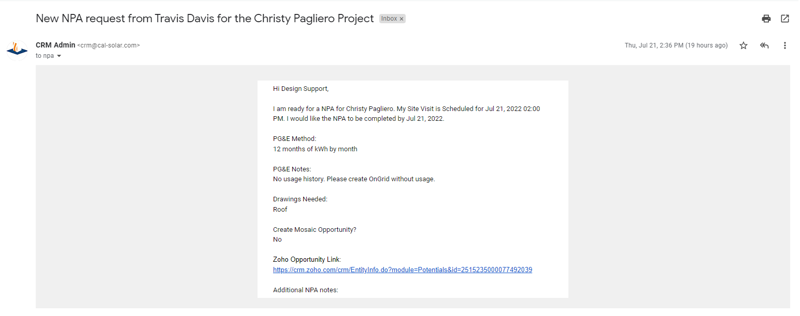At this point you can begin the NPA process. Start by proceding to Zoho and viewing the opportunity associated with this particular prospective client -- you can do this either by clicking on the link in the email or setting up your own NPA view in Zoho to list all requested NPAs.
Folder Setup
The first step in your process should be to setup the folder that is required for every NPA. This folder will be located in the shared folder of the sales person responsible for this prospective client (you can find who the sales team member is in Zoho -- discussed in Zoho Section). You should first verify that a folder for this client doesn't already exist by checking for a drive link in Zoho, searching google drive manually, or checking in the Zoho NPA section for any notes referencing an older folder. If the folder already exists either archive any old documents that are out of date or simply archive the whole folder and create a new one as we need up to date pricing tools etc. If the folder doesn't exist create a new one from scratch. To do this you need to go into the correct salesman client folder and create a folder structure identical to our current template found in google drive:
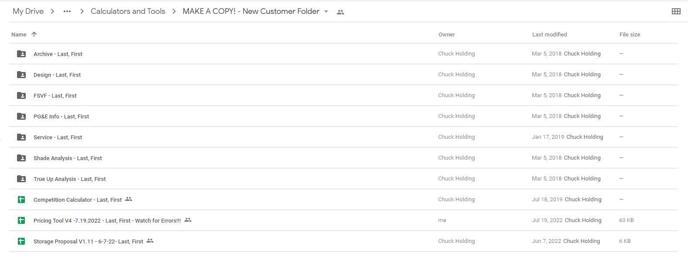The easiest way to create a client folder from scratch is by first creating the folder structure. To start manually create a folder in google drive with the correct naming scheme "Last, First" and then drag your make a copy folders into the manually created folder. After that you can browse to the make a copy contents which will contain only the drive documents and copy those into the google drive folder that you have already added your make a copy folders to, the folder should now look like this:
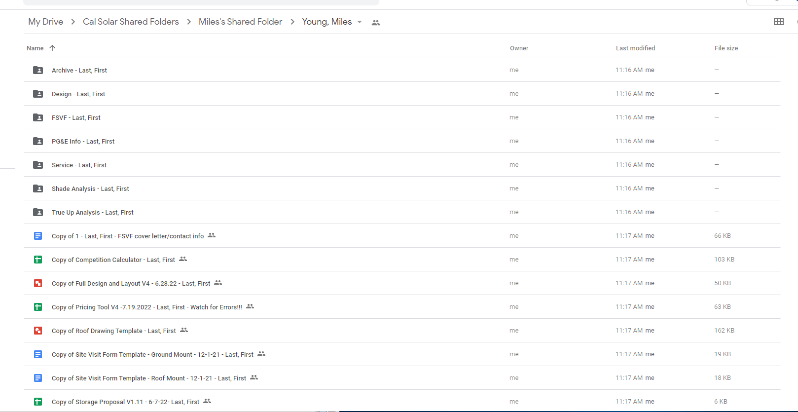The next step is to rename the files and folders, changing "Last, First" to the name of the client. You could do this manually, but you should also have the "advanced renamer" tool setup to expedite this process. After renaming the final step of the folder creation is to move all the documents into the correct folders, to do this reference the make a copy folder linked above if you forget where each document goes.
Zoho
Zoho is an important part of the NPA process as there are a few things that need to be updated as well as information that needs to be referenced. We can start from top to bottom with the various aspects of a zoho opportunity:
Shown above are a few of the fields in Zoho that you will be referencing during the NPA process. Starting from the upper left you will find the name of the customer, their phone number, and the link to their google drive folder. In Zoho you will also need to reference the site address, which is the location of the property you are compiling this report for. Perhaps the most important part of the Zoho opportunity for sales support is the NPA section which will have all the info necessary for you to complete the NPA. At the top of this section we have notes about any PG&E data gathered, we have the date the NPA is needed by which is your deadline, we have the completed date which you will fill out once your work is complete, and we have a notes section in which you should note anything that might be relevant to the sales person responsible. On the right the sales man indicates whether they want a roof drawing, ground mount, or both as well as any design notes which may or may not pertain to the NPA process.
Google drive link If the link to the drive folder is not already filled out make sure it is as this is part of the NPA process.
NPA Notes In the NPA section in Zoho there is a specific field for notes. We use this to briefly note anything unusual in the NPA that the sales person should know. This includes any irregularities in finding or matching the address, information found about the parcel including missing septic permits if there is a ground mount, if the home is a manufactured home, if there is a permitted generator, or any open permits. You should also note if you were not able to locate any PG&E usage for the client and if you have a partial roof drawing due to high shade.
Parcel Report There are a couple more important things to note in Zoho. Below is a picture of the parcel report section in which it is sales support responsibility to fill out snow load, AHJ (county/city), drive time, and distance from the Cal Solar office:
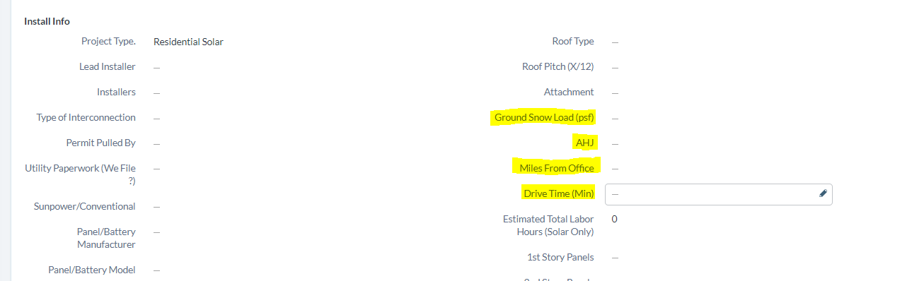One more tip for Zoho nagivation: if you look along the left side of the opportunity you will see some navigation links to google maps, Nevada County GIS applications, monitoring portals, and many other useful link that you should experiment and become familiar with:
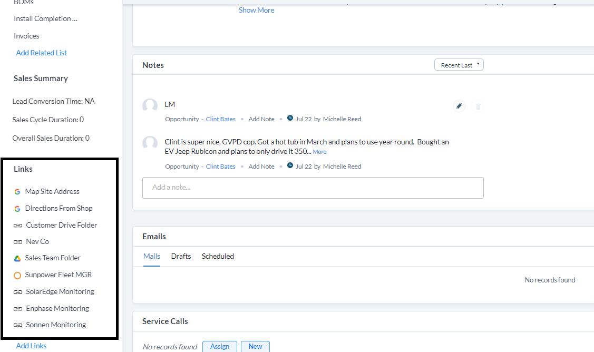Wrapping up this section keep in mind that it is sales supports responsibility to fill out the following fields in Zoho: customer drive link, ground snow load, AHJ, miles from office, drive time, NPA notes, and NPA completed date.
Parcel Information Report
The parcel information is a vital part of the NPA process and included in it are the following: snow load, overhead of property with parcel lines, and a permit report for the property. All of these documents should be added the the clients google drive folder
Overhead with Parcel Lines Most counties have some sort of GIS application in which you will be able to find a map of the area with parcel lines, for example NevCo GIS. When you use these applications you need to find the site address you are working on and get a screenshot of the property along with parcel lines and upload the screenshot to the google drive folder.
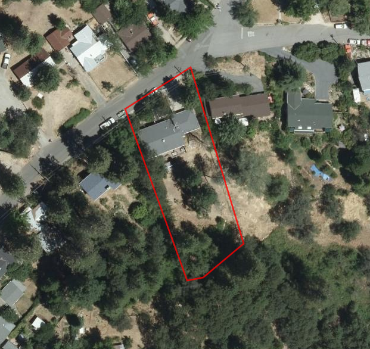If the salesman is requesting a ground mount you will also want to add a measurement (in feet) to one side of the parcel which most GIS applications allow you to do:
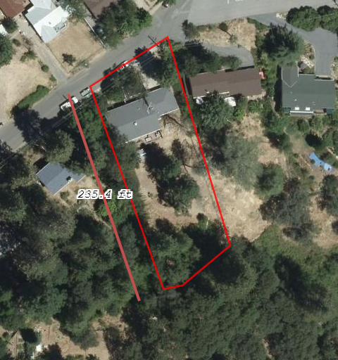Parcel snow load The snow load is essential for the planning and permitting side of the process. Some counties like Nevada County link to documents containing snow load in their GIS applications -- a PDF copy of this should be added to the clients design folder:
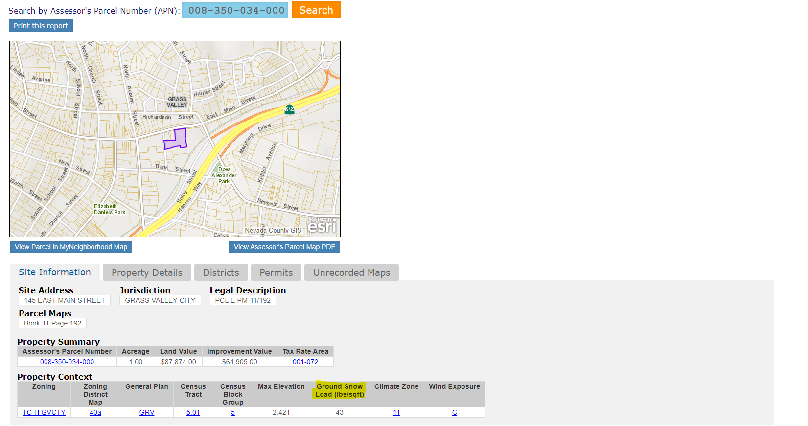You may have to search around for the snow load, but generally if you google "〈County name〉 snow load" you will likely find some official document with a list of snow loads relating to elevation:

Permit ReportThe permit report is a list of permits for the particular address. Once again many places like Nevada County have convenient links to the permit report in their GIS applications. Download a PDF of the permit report and upload it to the clients design folder:
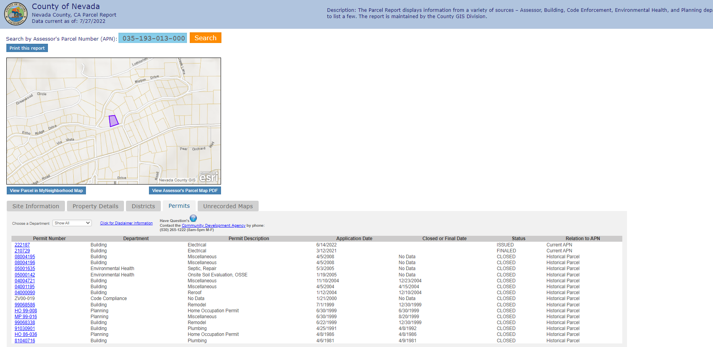Once again it may be difficult to find the permits, but a quick google search will usually result in finding the "permit portal" for the particular county or city for your site -- key words to look for are "Accela" or "eTrackit":
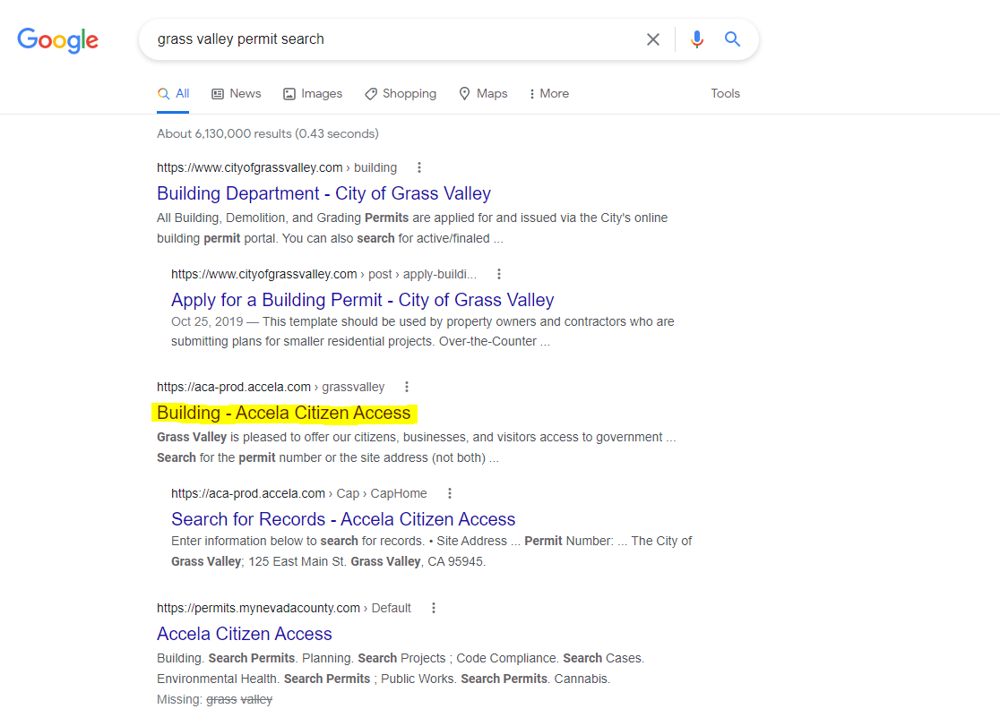Google Drive Documents
There are a number of documents that must be filled out which are created during the clients google drive folder setup including: storage site visit form, ground and/or roof site visit forms, full design and layout, and roof drawing. Most of these documents will be found in the design folder with the exception of the utility info sheet (PG&E folder).
Storage site visit form This form simply needs the name of the client and the site address filled out:
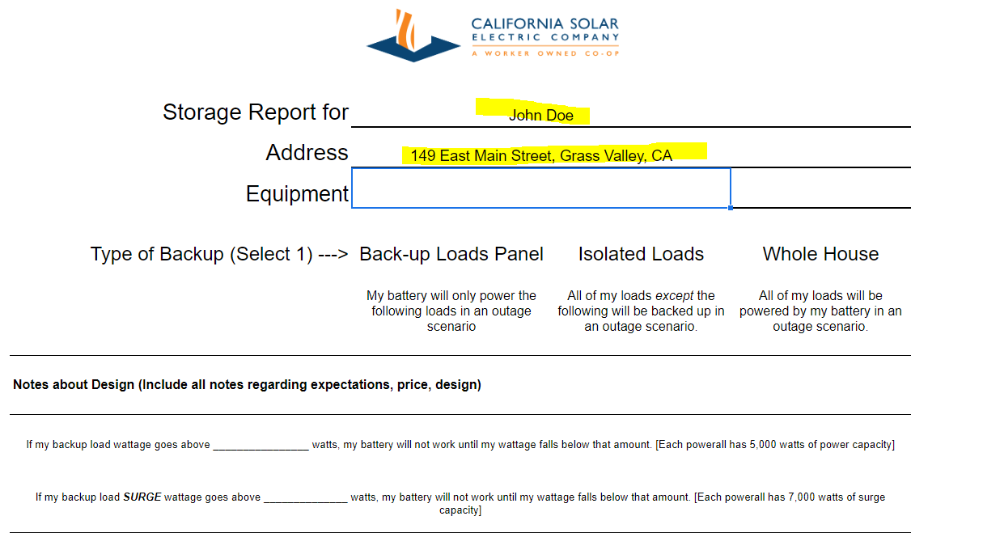Site visit form (roof/ground) These are the two main site visit forms. Depending on the notes in the NPA section of Zoho you will see that the sales person has requested a roof drawing, a ground mount drawing, or both. The upper portion of the forms are almost identical and require the clients name, site address, drive time, and client phone number:
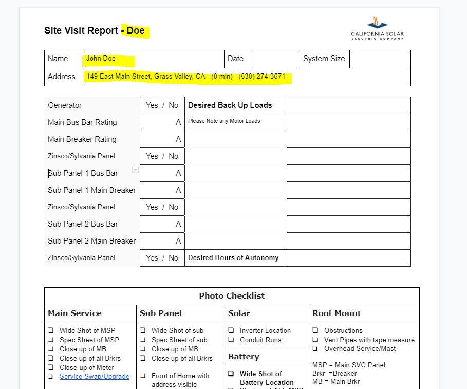The bottom portion (2nd page) is for the requested drawing. For a roof mount add the roof drawing (you can draw and drop the JPG file and resize it to fit):
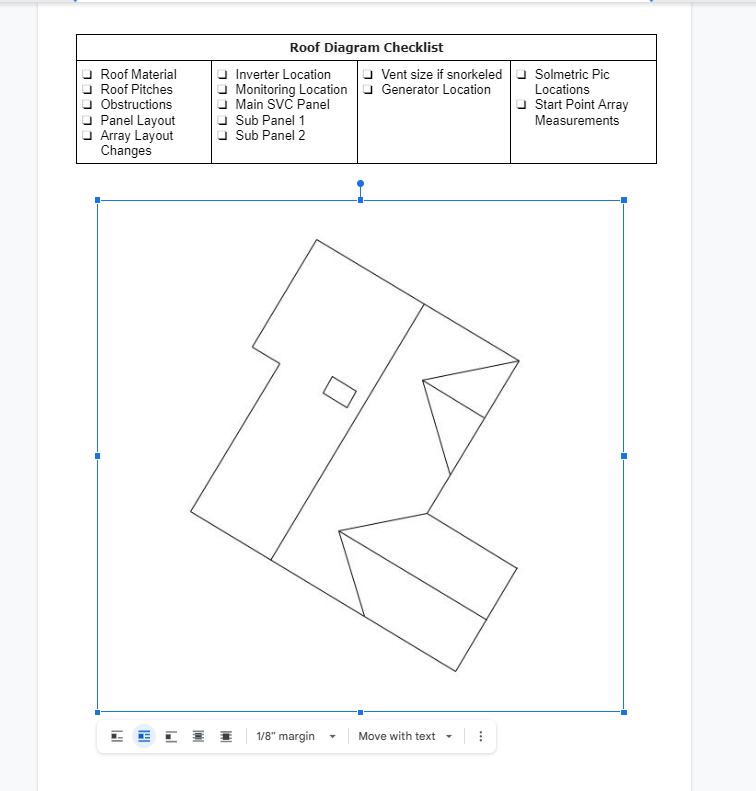For the site visit ground mount you need to add an overhead with parcel lines and a measurement, once again you will be able to drag and drop the screenshot overhead you have already added to the google drive folder:
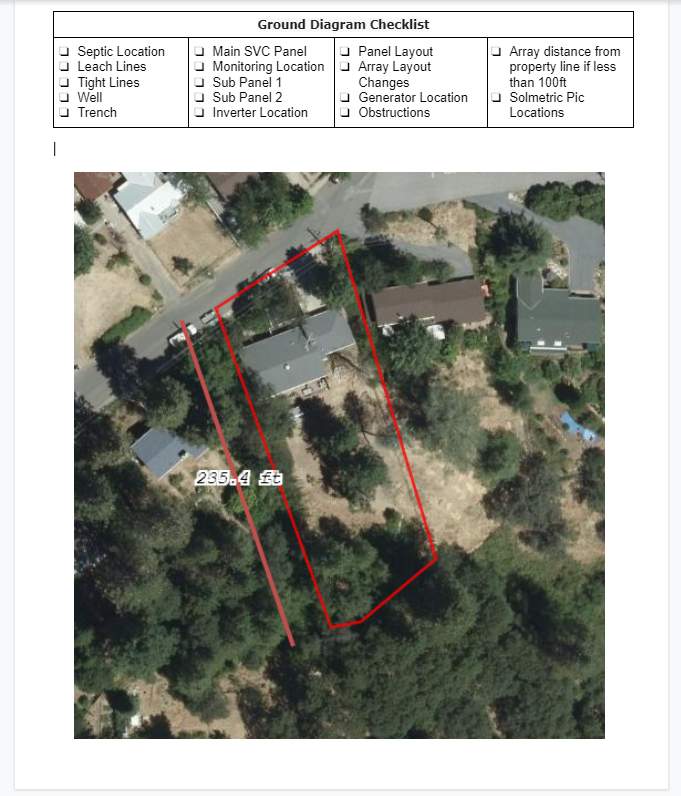Full design and layout This document simply requires a few fields to be filled out including client name, site address, phone number, sales person name, and google drive folder link (this can be done by highlighting the text and right clicking):
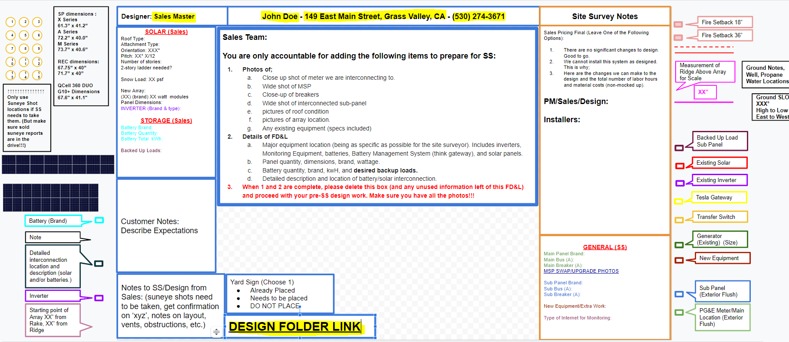Roof drawing This step will need to be completed if the NPA request section specifies the need for a roof drawing. To start your drawing begin by locating the address in google earth and taking a screenshot of the clearest overhead of the property you can find and uploading it to the google drive folder (the overhead should have true north as the direction directly upwards):
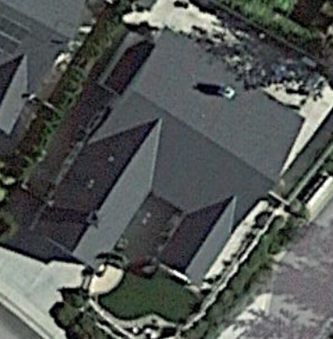Open the roof drawing template in the design folder and drag and drop your overhead into the drawing space then rotate so that the lines will be at right angles (easier to draw, keystroke is alt+shift+arrows):
Now you can begin the drawing process. You will use the provided lines on the left to outline the house and any ridge lines present. Various keystrokes are availabe: duplicate shape (cmd+d), rotate shape (alt+arrows), extend line (click and drag from dots), extend line at right angle (shift+click&drag), etc.
This can be more difficult if you don't have a clear overhead due to grainy imagery or shade, but do the best you can and ask your supervisor or the sales person about any concerns about your drawing. Try to add any obvious roof obstructions (chimneys, large vents, skylights) and once you are finished rotate the drawing back to true north, remove the overhead image from the drawing space, change the line color to black, export as a JPG (make sure to resize with the photo editor removing excess white space), and add the finished drawing to the design folder:
Electric Usage
The final step in the NPA process is to work with any electrical usage information we may have gathered from the client and set up everything for the sales person to start with the design process. In the Zoho NPA section there is a field called "PG&E Data Notes" which will have any notes from the sales person regarding electrical data. It will often say something like "emailed for usage" or "usage uploaded to drive" or provide PG&E login info.
Electric usage in drive If the electric usage is already in drive our job is simply to prepare the monthly data in addition to interval data if present. If there is no electric usage in the google drive folder you can check the emails associated with the Zoho opportunity, or the notes for a PG&E login. If there is a PG&E login, follow this tutorial to download the necessary usage. If there is no data you can proceed to the next step of the NPA process. With the electric usage, first look at the billing data and isolate the most recent 12 months of usage and round to the nearest kWh:
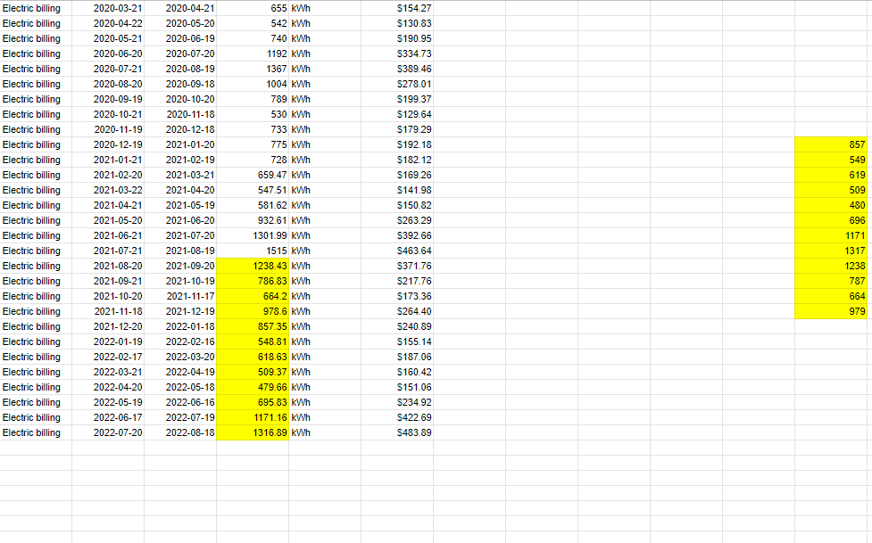If there is interval data, you will run and ETB analysis for the most common residential rates, follow this tutorial for specific instructions. Now that you have prepared both monthly data and interval data (or concluded that it is not available) you can progress to the final step of the NPA process.
OnGrid
This will be the final step in the NPA process. The OnGrid tool is used by the sales team to begin the system design process and generate their client facing output proposal sheets. It is sales support responsibility to prepare this as full as possible.
First load your OnGrid template before putting any client specific information into OnGrid:
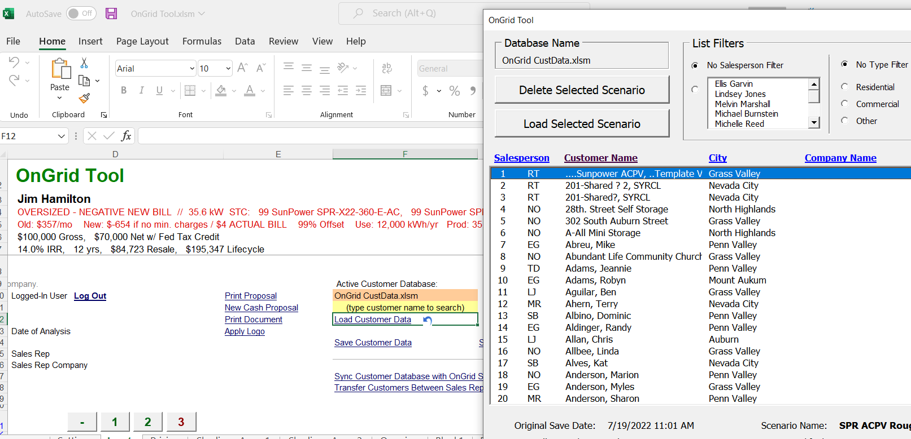After loading your template select the correct sales person from the pick list on line 15 and enter the client name on 23 and 24 (25 and 26 if there is a secondary):
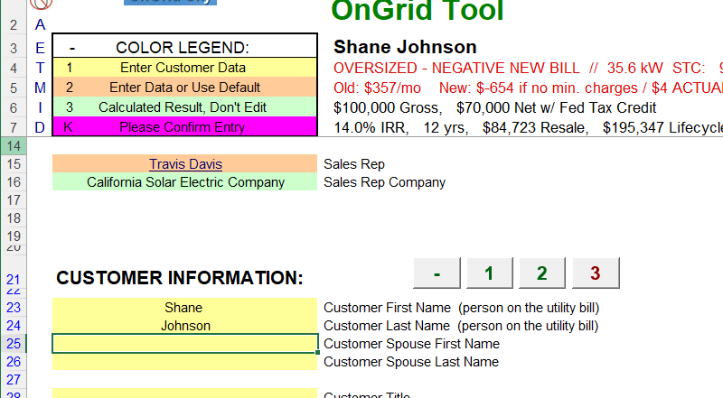Continue to lines 41-45 and enter the site address details:
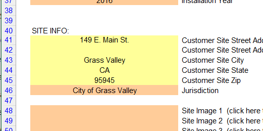Next we will scroll down to the electric usage section. Line 151 is the utility provider which should be PG&E by default, but change it the the correct company if necessary. The following two lines will have the starting rate schedule or the one that the client is currently on and then the ending rate schedule in case the client needs to change after completing the project. Lines 156-157 have the PG&E territory and type of heat source (note these may not appear depending on the starting rate schedule). All of these rate and territory values will be found in a PDF bill uploaded to the drive folder if present, fill these out in OnGrid by matching from the bill:
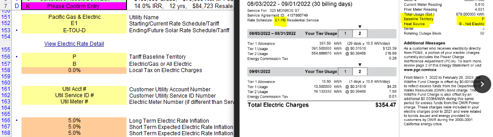Moving on to lines 173-196 you will only complete if you have electric usage. 173-184 you need to copy the monthly usage values in, but note that this should only be completed if you have a full 12 months and there are no negative values--if that is not the case leave it as is and make a note of this in the NPA section. lines 191-196 is where you data from the ETB analysis will go. Enter in the summer peak percentage on line 191 and the winter peak percentage on line 194 and the the other values will calculate from the excel formulas--note that this is usually done only for the ending rate schedule although if you have an analysis for their current rate schedule you may enter that as well:
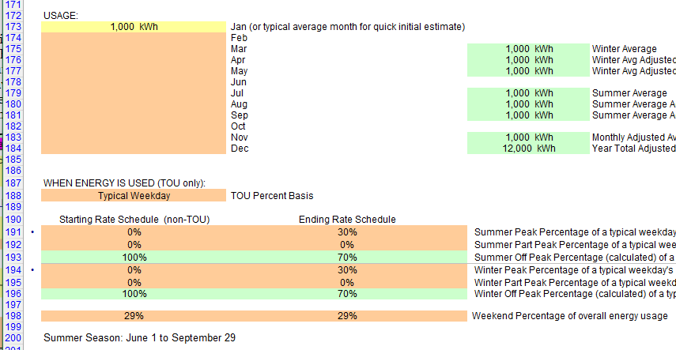Finally, move to line 260 verify that the NEM type is NEM2 and on line 293 verify that NREL location is Sacramento:
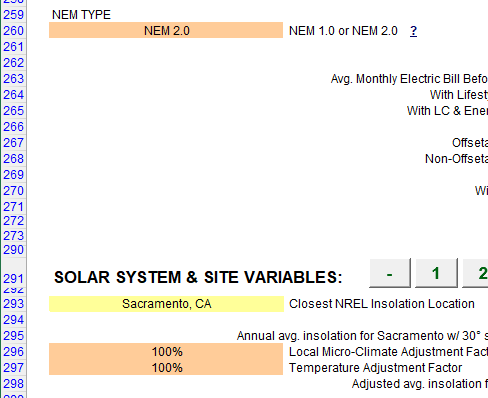